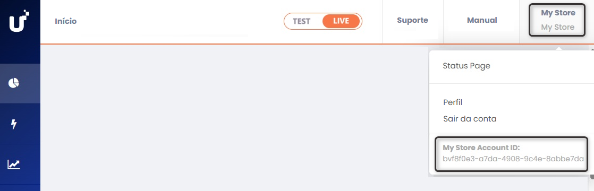
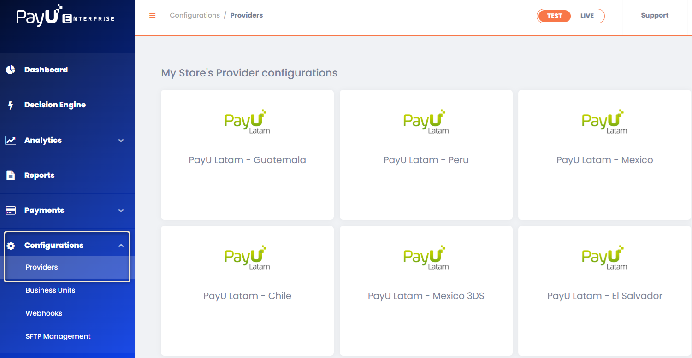
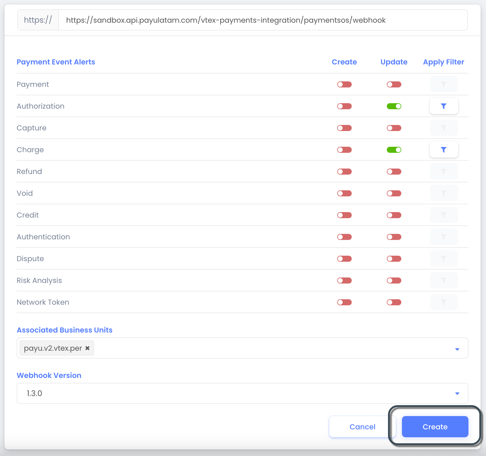
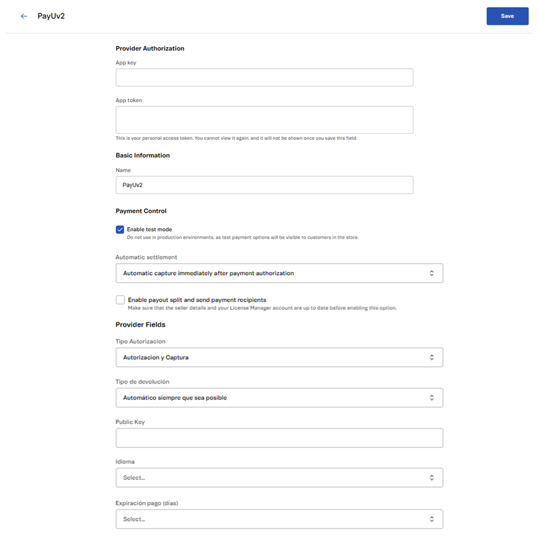
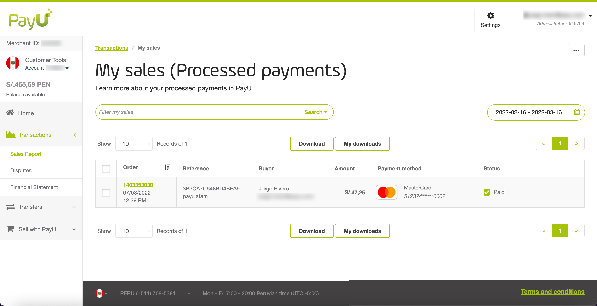

VTEX
A VTEX é uma plataforma de comércio digital empresarial que permite criar rapidamente uma loja online com recursos integrados. Para mais informações, visite o site oficial da VTEX.
Pré-requisitos
- Uma conta ativa na PayU Latam.
- Uma conta ativa na PayU Enterprise (PaymentsOS). Se você não tem uma conta, clique aqui para criar uma. A conta deve estar configurada no modo de produção/ativo. Para mais detalhes sobre como ativá-la, consulte Ativando sua conta PayU Enterprise.
- Uma conta VTEX com direitos e permissões suficientes para acessar o painel administrativo da VTEX. Essa conta deve ter a autenticação de dois fatores ativada.
Disponibilidade por País e Métodos de Pagamento
A tabela abaixo mostra a disponibilidade da VTEX por país e os métodos de pagamento compatíveis:
| País | Cartões de Crédito | Pagamentos em Dinheiro | Outros Métodos |
|---|---|---|---|
 Argentina Argentina |
Cartões de crédito | Pagamentos em dinheiro | - |
 Brasil Brasil |
AMEX, MasterCard, Visa | Boleto Bancário | - |
 Colômbia Colômbia |
AMEX, Codensa, Diners, MasterCard, Visa | Efecty, Su Red, referência bancária | PSE |
 Chile Chile |
Cartões de crédito | Pagamentos em dinheiro | - |
 México México |
Cartões de crédito | Pagamentos em dinheiro | SPEI |
 Peru Peru |
AMEX, MasterCard, Visa | - | - |
Ativando sua Conta PayU Enterprise (Modo Ativo)
Por padrão, as contas recém-criadas são configuradas no modo de teste. Para ativar sua conta para transações ao vivo, entre em contato com seu gerente de conta e solicite a ativação.
Sua solicitação deve incluir as seguintes informações:
- Merchant ID: Localize o Merchant ID da sua conta LATAM. Para mais detalhes sobre como encontrá-lo, consulte a documentação do Painel de Gestão da PayU.
- Account ID: Você pode encontrar seu Account ID no painel de controle da PayU Enterprise, conforme mostrado na imagem abaixo:

Configurando sua Conta PayU Enterprise
Para configurar os métodos de pagamento na VTEX para processamento através do nosso gateway, siga os passos abaixo. A configuração consiste em duas etapas. Antes de prosseguir, certifique-se de ter atendido aos pré-requisitos mencionados acima.
1. Configuração Inicial
A integração da PayU Latam com a VTEX é realizada por meio do PaymentsOS como middleware. O primeiro passo é configurar os seguintes componentes dentro da sua conta PayU Enterprise:
- Configuração do provedor
- Unidade de negócios
- Webhook
Você pode configurar esses componentes utilizando um dos seguintes métodos:
- Configurando a conta usando o Postman.
- Configurando a conta manualmente pelo painel da PayU Enterprise.
Configurando a Conta Usando o Postman
Siga estas etapas para configurar sua conta usando o Postman:
- Clique no botão abaixo para importar nossa coleção do Postman (atualize a página se o botão não funcionar).
-
Após importar a coleção, defina as variáveis globais. Baixe o arquivo de variáveis globais aqui.
-
No Postman, clique em Importar ao lado do nome do seu workspace e selecione o arquivo JSON baixado.
-
Clique em Importar para finalizar o processo.
-
Execute os métodos da coleção na ordem exibida. Primeiro, selecione o método
POSTchamado1. Logine, em seguida, vá até a aba Body.

-
Insira seu e-mail e senha da sua conta PayU Enterprise e clique em Enviar. Se o login for bem-sucedido, os dados de autenticação serão definidos para o próximo método.
-
Clique no método
GET2. Retrieve PayU Latam ID. -
No canto superior direito, clique no ícone de olho para localizar o parâmetro
env. Clique no ícone de lápis e defina-o comotestpara ambiente de teste oulivepara produção.

-
Clique em Enviar para continuar.
-
Em seguida, configure o provedor. Selecione o método
POST3. Create Provider Configuratione vá até a aba Body.

Preencha os seguintes detalhes:
| Parâmetro | Descrição |
|---|---|
| name | Nome da Configuração do Provedor. |
| description | Descrição relevante (opcional). |
| configuration_data.apiLogin | Nome de usuário ou login fornecido pela PayU. Como obter meu API Login |
| configuration_data.apiKey | Chave única do seu comércio. Como obter minha API Key |
| configuration_data.accountId | ID da conta PayU para o país de destino. |
| configuration_data.merchantId | Merchant ID na PayU Latam. |
| configuration_data.paymentCountry | País de processamento no formato ISO 3166 Alpha-3. |
| configuration_data.partnerID | Identificador da PayU. Insira ZOOZ_VTEX_V2. |
| configuration_data.cashRedirect | Defina como true para garantir o fluxo adequado de pedidos com pagamentos em dinheiro na VTEX. |
Nota
O parâmetroprovider_id é atribuído automaticamente pela resposta do método 2. Retrieve PayU Latam ID. Não modifique esse valor.
- Configure a Unidade de Negócios selecionando o método
POST4. Create Business Unite navegando até a aba Body.

Preencha os seguintes detalhes:
| Parâmetro | Descrição |
|---|---|
| id | Identificador da Unidade de Negócios (minúsculas, sem espaços). Esse valor não pode ser alterado posteriormente. |
| description | Descrição relevante (opcional). |
Nota
O parâmetrodefault_processor é atribuído automaticamente pela resposta do método 3. Create Provider Configuration. Não modifique esse valor.
- Crie o Webhook selecionando o método
POST5. Create Webhooke navegando até a aba Body.
Nota
O webhook funciona como a URL de confirmação que recebe notificações da VTEX quando uma transação muda de status.
Defina o parâmetro endpoint com base no seu ambiente:
- Teste:
https://sandbox.api.payulatam.com/vtex-payments-integration/paymentsos/webhook - Produção:
https://api.payulatam.com/vtex-payments-integration/paymentsos/webhook
Mantenha todos os outros parâmetros com seus valores padrão.
Neste ponto, sua conta PayU Enterprise usando PaymentsOS está configurada. O próximo passo é Configurar o Provedor VTEX.
Configurando a Conta Manualmente Usando o Painel PayU Enterprise
Siga estas etapas para configurar sua conta usando o painel PayU Enterprise.
- Criar a Configuração do Provedor
1.1 No painel PayU Enterprise, expanda o menu Configurações e selecione Provedores.

1.2 Clique no módulo correspondente ao país ou divisão para o qual deseja configurar o provedor.
Preencha os seguintes campos para a Configuração do Provedor:
| Campo | Descrição |
|---|---|
| Nome da Configuração | Insira um nome para a Configuração do Provedor. |
| Descrição | Forneça uma descrição relevante (opcional). |
| apiLogin | O usuário ou login fornecido pela PayU. Como obter meu API Login |
| apiKey | A chave única do seu comércio. Como obter minha API Key |
| accountId | O ID da conta PayU baseado no país onde você opera. |
| merchantId | O ID do seu comércio na PayU Latam. |
| paymentCountry | O país de processamento no formato ISO 3166 Alpha-3. |
| cashRedirect | Selecione true para garantir o fluxo correto de pedidos com pagamentos em dinheiro na VTEX.Nota: Essa configuração é essencial para comerciantes que processam pagamentos em dinheiro na VTEX. |
1.3 Clique em Criar.

- Criar a Unidade de Negócios
2.1 De volta ao painel, expanda o menu Configurações e selecione Unidades de Negócios.

2.2 Clique em Criar Unidade de Negócios e preencha os seguintes campos:
| Campo | Descrição |
|---|---|
| Nome da Unidade de Negócios | O nome da Unidade de Negócios. Deve estar em minúsculas e não conter espaços. Esse valor não pode ser alterado posteriormente, portanto, certifique-se de que está correto. |
| Descrição | Forneça uma descrição relevante (opcional). |
2.3 Na seção Escolher um Provedor Padrão para Esta Unidade de Negócios, selecione a Configuração do Provedor criada na Etapa 1. Depois, clique em Criar.

- Criar o Webhook
Nota
O webhook funciona como a URL de confirmação que recebe notificações da VTEX quando uma transação muda de status.3.1 De volta ao painel, expanda o menu Configurações e selecione Webhooks.

3.2 Clique em Criar um Endpoint de Webhook e insira a URL apropriada com base no seu ambiente:
- Teste:
https://sandbox.api.payulatam.com/vtex-payments-integration/paymentsos/webhook - Produção:
https://api.payulatam.com/vtex-payments-integration/paymentsos/webhook
3.3 Na tabela Alertas de Eventos de Pagamento, ative o controle deslizante Atualizar para Autorização e Cobrança. Em seguida, no campo Unidades de Negócios Associadas, insira a Unidade de Negócios criada na etapa anterior. Por fim, clique em Criar.
Neste ponto, sua conta PayU Enterprise usando PaymentsOS está totalmente configurada. O próximo passo é configurar o provedor VTEX.
2. Configurando o Provedor VTEX
Depois de configurar sua conta PayU Enterprise, o próximo passo é configurar o provedor VTEX para cada método de pagamento. Para prosseguir, você deve ter uma conta de usuário válida para acessar o admin da VTEX.
Criando um Novo Provedor
Nota
Antes de criar o novo provedor, certifique-se de ter configurado o fingerprint para a PayU. Para isso, consulte este guia.- No painel esquerdo, selecione Configurações da Loja > Provedores > Novo Provedor:

- Localize PayU e selecione PayUv2:
Importante
Certifique-se de selecionar o conector PayUv2, pois este guia se aplica especificamente a essa versão.- Na configuração do conector, instale-o clicando no botão Instalar aplicativo. Em seguida, preencha os seguintes campos:

Nota
As informações do conector podem ser obtidas por meio de:
- Coleção do Postman: Execute o método Retrieve Authentication Keys, configurando o parâmetro global
envcomotestoulive, dependendo do ambiente de processamento. - Painel PayU Enterprise: Navegue até Conta > Unidades de Negócio e selecione a Unidade de Negócio criada em Configurando sua Conta PayU Enterprise. Use o seletor no topo para escolher o ambiente de processamento.
Alguns valores estão ocultos por padrão; clique no ícone de olho para revelá-los.
| Campo | Descrição |
|---|---|
| Nome da afiliação | Nome usado para identificar a afiliação do Gateway. |
| Seletor de ambiente | Selecione o ambiente para processar transações. Certifique-se de que todos os parâmetros correspondam ao ambiente selecionado na PayU Enterprise. |
| Application Key | App ID da Unidade de Negócio. |
| Application Token | Chave privada da API da Unidade de Negócio. |
| Captura de pagamento | Escolha como liquidar (capturar) os pagamentos:
Para mais detalhes, consulte Recurso de Captura Automática Personalizada. O período padrão de captura automática é de sete (7) dias após a aprovação. |
| Período agendado em horas para captura automática | Disponível quando Agendado: Agendar a captura automática estiver selecionado. Defina o período de captura automática (somente valores inteiros; não são permitidos decimais). |
| Tipo Autorizacion | Escolha entre fluxos de pagamento de uma etapa e duas etapas:
Consulte Fluxos de Pagamento para mais informações. |
| Public Key | Chave pública da API da Unidade de Negócio. |
| Idioma | Selecione o idioma para emissão de pedidos. Idiomas suportados:
|
| Expiração do pagamento (dias) | Define o período de validade para pagamentos em dinheiro. Importante: Esse valor deve corresponder ao campo Validade da nota promissória na seção Configurar métodos de pagamento em dinheiro. |
| Ativar divisão de pagamento e enviar destinatários do pagamento? | Selecione Não. |
- Clique em Salvar para concluir a configuração.
Configurando Métodos de Pagamento
Configure os métodos de pagamento que serão exibidos no site durante o checkout. Veja os métodos de pagamento disponíveis.
Importante
- O PIX não está disponível para o Brasil ao usar a VTEX.
- As alterações nas condições de pagamento podem levar até 10 minutos para serem refletidas no fluxo de checkout.
Configurando Cartões de Crédito ou Débito
Dependendo do seu país de processamento, você pode configurar a afiliação criada para usar cartões de crédito ou débito*. Siga as etapas abaixo para adicionar esse método de pagamento à sua loja VTEX.
* A disponibilidade de cartões de débito depende do seu país de processamento.
Importante
Clique aqui para saber como configurar cartões Co-branded ou Private Label.- No painel esquerdo, selecione Transações > Pagamentos > Configurações. Selecione a guia Condições de Pagamento e clique no ícone de adição.

- Selecione o método de pagamento que deseja adicionar. Os métodos de pagamento são agrupados por tipo.
Para este exemplo, selecionamos American Express na seção de Cartão de Crédito.

- Forneça os seguintes detalhes:
- Nome da Regra (para identificação rápida): Insira um nome descritivo para a condição de pagamento.
- Status: Defina o status da condição de pagamento. Você pode ter apenas uma condição de pagamento ativa por método de pagamento.
- Processar com afiliação: Selecione a afiliação do gateway configurada anteriormente.
- Pagamento à vista ou parcelado?: Selecione À vista.

- Clique em Salvar. A nova condição de pagamento agora será listada na guia Condições de Pagamento.

Configurando Cartões Co-Branded ou Private Label
Os cartões co-branded e private label são cartões de crédito emitidos por uma loja ou marca, às vezes em parceria com redes como AMEX, VISA ou MasterCard. Siga estas etapas para adicionar esse método de pagamento à sua loja VTEX.
- No painel esquerdo, selecione Transações > Pagamentos > Configurações. Selecione a guia Pagamentos customizados.

- A guia Pagamentos customizados fornece cinco (5) espaços para configurar cartões co-branded e private label. Neste exemplo, configuramos o cartão colombiano Codensa, que é um cartão private label.
Clique em qualquer caixa disponível na seção Cartões da Loja (Bandeira Própria).
- Insira os seguintes detalhes do cartão, mantendo o formato exato:
- Nome:
Codensa. - Descrição:
Codensa - Intervalos de BIN:
590712-590712 - Código de pagamento do adquirente:
codensa
Nota
Para cartões co-branded, você também deve selecionar a bandeira do cartão.
Use a tabela abaixo para configurar cartões co-branded e private label. Você pode deixar os valores restantes com suas entradas padrão.
| País | Nome | Descrição | Intervalos de BIN | Código de pagamento do adquirente |
|---|---|---|---|---|
|
Argencard | Argencard | 501105-532362 |
argencard |
|
Cabal | Cabal | 60423,60400,589657 |
cabal |
|
Cencosud | Cencosud | 603493-603493 |
cencosud |
|
Naranja | Naranja | 589562 |
naranja |
|
Shopping | Shopping | 603488 |
shopping |
|
Codensa | Codensa | 590712-590712 |
codensa |
Para mais detalhes sobre a configuração de cartões co-branded e private label, visite o VTEX Help Center.
- Clique em Salvar. Após criar o pagamento personalizado, você será redirecionado para a opção de criar uma Condição de Pagamento. Siga as instruções na seção Configurando Cartões de Crédito ou Débito para concluir esta etapa.
Configurando Métodos de Pagamento em Dinheiro
Como os pagamentos em dinheiro exigem que os clientes efetuem o pagamento em locais físicos, você pode configurar esse método de pagamento na VTEX como notas promissórias (Notes Payables).
Nota
Para Boleto Bancário no Brasil, este procedimento não é necessário. Basta localizar e configurar esse método de pagamento como uma condição de pagamento.Ao configurar um método de pagamento em dinheiro, os clientes são redirecionados para o checkout da PayU, onde podem baixar o comprovante de pagamento e pagá-lo no local físico correspondente. Siga as instruções abaixo para adicionar esse método de pagamento à sua loja VTEX.
- No painel esquerdo, selecione Transações > Pagamentos > Configurações. Selecione a guia Pagamentos customizados.
- Nesta guia, há cinco (5) espaços disponíveis para configurar métodos de pagamento em dinheiro. Neste exemplo, configuraremos o OXXO, um método de pagamento em dinheiro do México.
Clique em qualquer caixa disponível na seção Promissórias.
- Forneça as seguintes informações:
- Nome: Use o valor listado aqui na coluna
parâmetro paymentMethod. Para este exemplo, insiraOXXO.- Descrição: Insira uma descrição para exibição quando o cliente selecionar esse método de pagamento (opcional).
- Data de Expiração da Nota Promissória: Especifique o número de dias antes do vencimento do pagamento em dinheiro. O padrão é 7 dias. Certifique-se de que esse valor corresponde à configuração Expiração do Pagamento (dias) configurada na afiliação da VTEX para evitar problemas de processamento.
Deixe os demais campos com seus valores padrão.
- Clique em Salvar. Depois que o pagamento personalizado for criado, você será redirecionado para configurar uma nova Condição de Pagamento. Siga as instruções na seção Configurando Cartões de Crédito ou Débito.
Configurando PSE
Pré-requisitos:
- Este método de pagamento está disponível apenas para lojistas que processam pagamentos na Colômbia.
- Para oferecer PSE como método de pagamento, você deve instalar o Aplicativo PSE desenvolvido pela VTEX. Se ainda não o fez, acesse Configurações da Conta > Aplicações > App Store e procure por Bancos para PSE.
Se o aplicativo não estiver disponível na loja, você pode solicitar sua instalação à equipe da VTEX enviando um ticket para o Suporte VTEX. - Se você estiver utilizando uma integração VTEX Legacy, a VTEX precisará realizar uma configuração adicional antes que você possa configurar este método de pagamento. Entre em contato com seu representante VTEX ou solicite assistência via Suporte VTEX.
Nota
Para mais informações, consulte os seguintes recursos da VTEX:
- Para configurar o PSE, acesse o painel de administração da VTEX e vá até Configurações da Loja > Pagamentos > Configurações > Condições de Pagamento. Em seguida, siga estas etapas:
1.1 Clique no botão +.
1.2 Na categoria Outros, localize PSE.
1.3 Preencha os seguintes campos:
• Nome da Regra: Insira um nome descritivo para identificar este método de pagamento.
• Processar com Afiliação: Selecione a afiliação do gateway configurada para processar pagamentos com PayUV2.
• Status: Ative a condição de pagamento.
1.4 Clique em Salvar para aplicar as configurações.
- Configure o aplicativo Bancos para PSE com suas credenciais da PayU seguindo estas etapas:
2.1 Faça login no painel de administração da VTEX e vá até Apps > Aplicativos Instalados > Banks for PSE.
2.2 Preencha o formulário e clique em Salvar.
| Campo | Descrição |
|---|---|
| Conector Utilizado para Processar o PSE | Selecione PayUv2 na lista suspensa. |
| Código da Aplicação | Insira a chave privada da Unidade de Negócios. Esta informação está disponível no Painel de Controle PayU Enterprise, conforme explicado aqui. Nota: Este campo corresponde ao Token de Aplicação da afiliação VTEX. |
| Chave da Aplicação | Insira o ID da Aplicação da Unidade de Negócios. Esta informação está disponível no Painel de Controle PayU Enterprise, conforme explicado aqui. Nota: Este campo corresponde à Chave da Aplicação da afiliação VTEX. |

- Após concluir a configuração, você poderá processar transações em ambiente de produção com PSE.
Importante
Para testar o PSE em um ambiente sandbox, certifique-se de que sua afiliação VTEX está no modo de teste e que você possui uma configuração adicional específica para o PSE. Para mais orientações, entre em contato com sua agência de implementação ou com o Suporte VTEX.Testando a Integração
Depois de configurar as condições de pagamento para seus métodos de pagamento, é altamente recomendável testar sua integração antes de processar transações reais.
Pré-requisitos para Testes Bem-sucedidos:
- Certifique-se de que sua conta PayU Enterprise está no modo
TEST. - Verifique se o Seletor de Ambiente em sua Afiliação ao Gateway VTEX está definido como
TEST. - Utilize as credenciais de teste apropriadas ao configurar a Afiliação ao Gateway VTEX. Você pode encontrar as credenciais de teste aqui.
- Após concluir seus testes, atualize a configuração com as informações de produção, incluindo sua conta PayU Enterprise, o seletor de ambiente na afiliação VTEX e as credenciais.
Passos para Realizar uma Transação de Teste
-
No painel administrativo da VTEX, clique em VISITAR LOJA no menu superior.

-
A loja configurada para sua conta VTEX será aberta. Selecione qualquer produto e prossiga com a compra.

-
No carrinho de compras, clique no botão Fechar Pedido.

-
Na seção de pagamento, os métodos de pagamento disponíveis aparecem agrupados por tipo. Selecione o método que deseja testar e insira os dados de teste. Você pode encontrar números de cartões de teste e informações relevantes aqui.
Por fim, clique em Finalizar Compra.
Verificando a Transação
Depois que a compra for aprovada, você pode verificar a transação nos seguintes locais:
-
Admin VTEX: Navegue até Pagamentos > Transações.
-
Painel PayU Enterprise: Vá para Pagamentos > Buscar.
Nota
O parâmetro ID da Transação Externa dentro da Atividade da Transação corresponde ao ID do Pedido na PayU. -
Painel de Gestão PayU: Verifique a transação no módulo Relatório de Vendas.

-
API de Consultas: Use o ID da Transação Externa como parâmetro
OrderID.
Testando Fluxos de Duas Etapas
Se sua Afiliação ao Gateway estiver configurada para processar transações usando um fluxo de duas etapas, os fundos autorizados no cartão de crédito não serão liquidados até que você solicite explicitamente a liquidação. Para concluir a liquidação, você deve faturar o pedido.
Passos para Faturar um Pedido
-
Localize a transação no Admin VTEX, em Pagamentos > Transações, e clique nela.
Em seguida, clique no botão Pedido no canto superior direito.
-
Role até a seção Pacote e clique em Faturar Pacote.

-
Insira os detalhes da fatura e clique em Enviar Fatura.
Assim que a fatura for enviada ao cliente, o valor autorizado será cobrado do cartão do cliente.
Nota
Um pedido autorizado pode ser cancelado usando o botão Cancelar Pedido nos detalhes do pedido.Quando um pedido é cancelado, a PayU envia uma transação de estorno, que é registrada tanto no Hub quanto na PayU Latam.